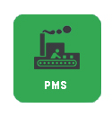
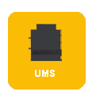
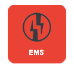

<mat-toolbar color="primary" class="mat-elevation-z6">
  <button *ngIf="menuBarDisplay" mat-icon-button (click)="open()" aria-label="menu" value="menu" class="header-logo">
    <mat-icon>menu</mat-icon>

    
  </button>
  <p>PlantConnect<span class="sub">Solution by Analogic Automation Pvt. Ltd.</span></p>
  <span class="spacer"></span>
  <button (click)="togglemenu()" mat-icon-button matTooltip="Menu" matTooltipPosition="left">
    <i class="fa fa-th" aria-hidden="true"></i>
  <!-- <mat-icon>menu</mat-icon> -->
          <div class="sub-meni" [attr.data-tooglemenu]="datatoggle">

            <div class="">
                  <ul class="dropdown-nav">
                    <li>
                        <a href="dashboard">
                            <!-- <mat-icon class="m-icon">insert_chart</mat-icon><span class="menu-label">PMS</span> -->
                            
                        </a>
                    </li>
                    <li class="second-child">
                        <a href="machinedetail">
                            <!-- <mat-icon class="m-icon"> insert_chart</mat-icon><span class="menu-label">UMS</span> -->
                            
                        </a>
                    </li>

                    
                    
                  </ul>
                  <ul class="dropdown-nav">
                    <li>
                      <a href="ems">
                          <!-- <mat-icon class="m-icon"> insert_chart</mat-icon><span class="menu-label">EMS</span> -->
                          
                      </a>
                    </li>

                    
                </ul>
                <ul class="dropdown-nav last-nav">
                  <li class="last-child">
                      More
                  </li>
                </ul>
                  <!-- <div class="col-md-3"><mat-icon>insert_chart</mat-icon><span>PMS</span></div>
                  <div class="col-md-3">UMS</div>
                  <div class="col-md-3">AMS</div> -->
            </div>
          </div>
  </button>
  <button (click)="onLogout()" mat-icon-button matTooltip="Log out" matTooltipPosition="left">
    <mat-icon>power_settings_new</mat-icon>
  </button>
</mat-toolbar>